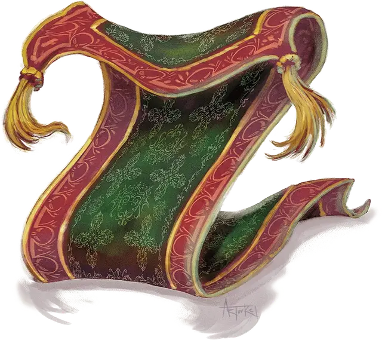

Ковёр удушения
Rug of Smothering
Большой Конструкт, без мировоззрения

Класс Доспеха 12
Хиты 33 (6к10)
Скорость 10 футов
| мод | спас | ||
|---|---|---|---|
| СИЛ | 17 | +3 | +3 |
| ЛОВ | 14 | +2 | +2 |
| ТЕЛ | 10 | +0 | +0 |
| мод | спас | ||
|---|---|---|---|
| ИНТ | 1 | −5 | −5 |
| МДР | 3 | −4 | −4 |
| ХАР | 1 | −5 | −5 |
Иммунитет к урону психическая энергия, яд
Иммунитет к состояниям паралич, отравление, очарование, ослепление, окаменение, испуг, глухота
Чувства слепое зрение 60 футов (слеп за пределами этого радиуса), пассивное Восприятие 6
Опасность 2 (450 опыта)
Бонус мастерства +2
Особенности
Восприимчивость к антимагии. Ковер недееспособен, пока находится в пределах области преграды магии. Став целью рассеивания магии [dispel magic], ковёр должен преуспеть в спасброске Телосложения Сл спасброска заклинателя, иначе потеряет сознание на 1 минуту.
Передача урона. Пока ковер держит существо в захвате, он получает только половину урона, причиняемого ему, а существо, схваченное ковром, получает вторую половину.
Обманчивая внешность. Пока ковер остается без движения, он неотличим от обычного ковра.
Действия
Удушение. Рукопашная атака оружием: +5 к попаданию, досягаемость 5 футов, одно существо с размером не больше Среднего. Попадание: Существо становится схваченным (Сл высвобождения 13). Пока цель схвачена, она опутана, ослеплена, и рискует задохнуться, а ковер не может душить другую цель. Кроме того, цель в начале каждого своего хода получает дробящий урон 10 (2к6 + 3).
Описание
Потенциальных воров и неосторожных героев, прибывших к порогу обители врага, глаза и уши предупреждают о ловушках. Но приключение может закончиться, не начавшись, из-за оживленного ковра под их ногами, который задушит их до смерти.
Ковер удушения может быть любой формы, от высококачественной ручной работы, достойной королевы, до грубой циновки в хижине крестьянина. Существа со способностью чувствовать магию, обнаруживают ложную магическую ауру ковра душителя.
В некоторых случаях ковер удушения маскируется под ковер-самолет или другой полезный магический предмет. Однако персонаж, который стоит или сидит на ковре, или пытается произнести командные слова, быстро оказывается в ловушке ковра, который плотно обхватывает свою жертву.